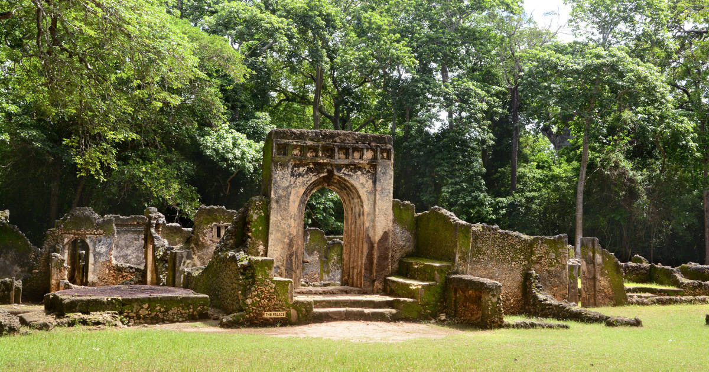
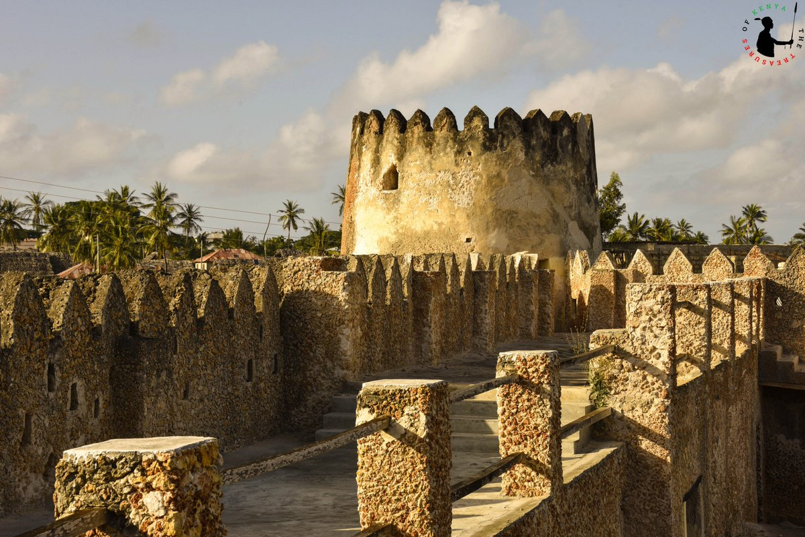
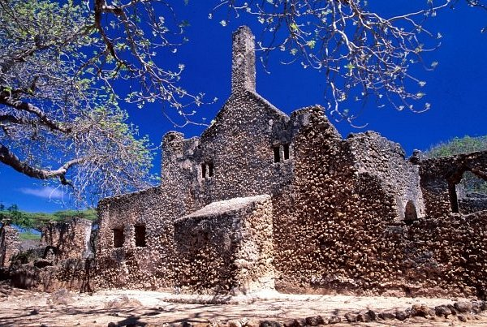

A Blend of Continents
The Kenyan coast has been a global hub for centuries. As monsoon winds brought merchants from Oman, Persia, and India, a unique Afro-Arabic architectural identity was born.
Swahili architecture is instantly recognizable by its heavy use of coral rag (fossilized coral mined from the ocean), brilliant white lime plaster, and incredibly detailed wooden doors. Unlike the temporary structures of the deep interior, these coastal towns were built as permanent, wealthy merchant fortresses.
Iconic Landmarks
Lamu Old Town
UNESCO World Heritage Site
The oldest and best-preserved Swahili settlement in East Africa. The town is defined by narrow, winding alleyways designed to keep streets shaded, with massive coral stone houses featuring inner galleries and rooftop patios.

Mombasa Old Town
Mombasa Island
Featuring a heavy blend of Swahili, Arabic, and later Portuguese influence (such as Fort Jesus). Known for its elaborately carved wooden balconies and colorful shutters facing the old port.

Gede Ruins
Malindi / Coastal Forest
An abandoned medieval Swahili stone town dating back to the 12th century. The ruins feature a complex palace structure, numerous coral stone houses with sunken courtyards, and pillar tombs showcasing advanced stone masonry and coral plastering.

Siyu Fort
Pate Island / Lamu Archipelago
Unlike other coastal forts built by Portuguese or Omani rulers, Siyu Fort was constructed entirely by local Swahili leaders in the 19th century to defend against Omani incursions, utilizing native coral rag stone and timber craftsmanship.

Takwa Ruins
Manda Island / Lamu Archipelago
The remains of a 15th-century Swahili trading town. Its Friday Mosque is architecturally unique, featuring a prominent coral pillar constructed directly over the mihrab, a design detail honoring local spiritual leaders.

Form Follows Climate
Swahili houses feature roof-level terraces to capture high coastal breezes, while narrow winding streets are deliberately designed to provide maximum daytime shading.